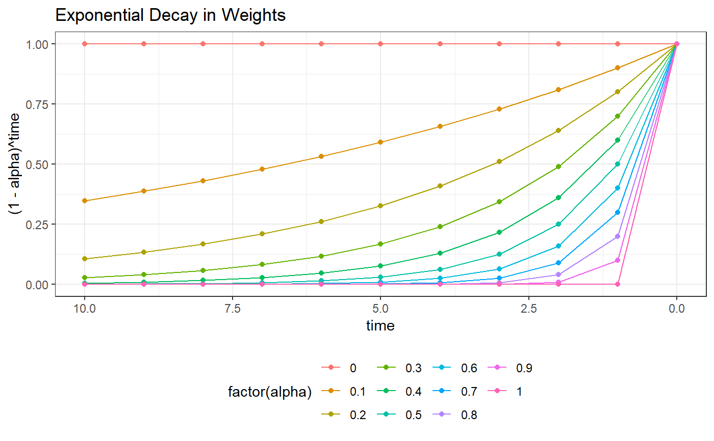
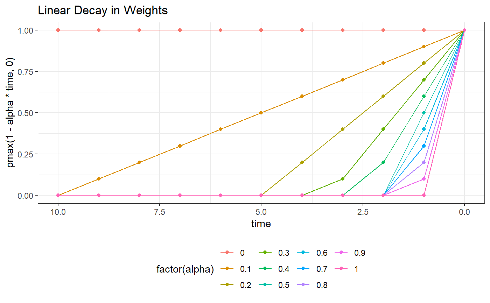

This function estimates the simple moving average for a specific window and weights it with a variety of optional decays (e.g., exponential, linear, none). Whether to omit missing data or not is based on the missing threshold, which is a proportion and indicates the tolerance. If the weighted proportion missing exceeds this threshold, then that observvation is missing, otherwise, missing data are excluded and the weighted simple moving average calculated on the non missing data.
weighted.sma( x, window, decay = c("exponential", "linear", "none"), alpha, missThreshold = 0 )
| x | Time series data on which to calculate the weighted simple moving average. It is assumed that these data are in the correct order and that time is equally spaced. Any missing data should be filled in with NAs. |
|---|---|
| window | An integer indicating the size of the window to use. This window will include the current value. |
| decay | A character string indicating the type of decay to use on the weights. |
| alpha | An optional value. Not needed for |
| missThreshold | A numeric value indicating the proportion of data that can be missing for a given window before the resulting simple moving average is set to missing. This is a proportion of the weighted data, so not all data points will necessarily be equally weighted. |
A numeric vector of the weighted simple moving averages
dweights <- expand.grid( time = 0:10, alpha = seq(0, 1, by = .1)) library(ggplot2) ggplot(dweights, aes(time, (1 - alpha)^time, colour = factor(alpha))) + geom_line() + geom_point() + theme_bw() + scale_x_reverse() + theme(legend.position = "bottom") + ggtitle("Exponential Decay in Weights")ggplot(dweights, aes(time, pmax(1 - alpha * time, 0), colour = factor(alpha))) + geom_line() + geom_point() + theme_bw() + scale_x_reverse() + theme(legend.position = "bottom") + ggtitle("Linear Decay in Weights")#> [1] NA NA 2 3 4#> [1] NA NA 2 3 4#> [1] NA NA 2 3 4#> [1] NA NA 2.070111 3.070111 4.070111#> [1] NA NA 2.428571 3.428571 4.428571#> [1] NA NA 2.074074 3.074074 4.074074#> [1] NA NA 2.285714 3.285714 4.285714weighted.sma(c(1, NA, NA, 4, 5), window = 4L, decay = "exponential", alpha = .4, missThreshold = .4)#> [1] NA NA NA NA 4.625